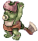
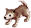
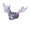
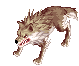
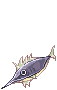
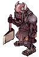
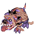
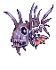

Bios Island
| This quest or instance is repeatable. | ||
|---|---|---|
| Cooldown | Tickets Available | |
|
Resets at 0:00 |
Solo: 1 | Party: 2 |
Overview
| Requirements | |
|---|---|
| Base Level: | 160 |
| Starting Point: | |
| Party: | 1 or more players |
| Prerequisite(s): | Dimensional Travel |
| Rewards | |
| Experience: | - |
| Items: | 1 Token of Hero and 1 Prize of Hero |
| Others: | Access to Morse's Cave |
Bios Island is part of the episode 14.3 and is the prerequisite of all the other instances found in the Flame Cave. If you've completed the Dimensional Travel quest, you will be able to unlock the Bios Island instance menu from the Warper.
The instance is divided in 3 parts. In parts 1 and 2, your objective is to kill every single mob on the map in order to get the warp, on the far right side, to open up. These mobs move fairly slowly so it is possible to kite them. Don't over mob or you might die as they do hit pretty hard!
In part 3, you will have to clear 3 waves of monsters before Reaper Yanku appears. You do not have to be within the MVP's range when it is killed to obtain your Token of Hero.
You have 1 hour to complete this instance.
Walkthrough
- Enter the Fire Cave by talking to the Warper > Instances > Bios Island.
- Talk to the Wandering Old Man to begin the Bios Island quest.
- Click on the Yellow Seed which is right to the Wandering Old Man. You can generate and enter the instance from this NPC.
- Once you've entered, walk a bit on the east to get a dialogue scene between Vrid and Zeith.
- You will be asked to eliminate all the monsters in the first and second floor to proceed. They do a lot of damage so be careful!
- Once you reach the final room, you will meet Vrid and Zeith again. After the dialogue, 3 series of mobs will spawn. Kill them all to proceed.
- The Reaper Yanku will then spawn. He is relatively easy, just make sure to avoid the Comet attack (you can use spellbreak on this one).
- The MVP will drop a Prize of Hero (regular drop) after dying. You can then talk to Vrid to exit the area and be rewarded with a Token of Hero.
Monsters
| Image | Name | HP | Race | Element |
|---|---|---|---|---|
| First Floor | ||||
|  | Corrupt Orc Baby | 250,000 | Demi-human | Earth 2 |
|  | Corrupt Baby Desert Wolf | 232,890 | Brute | Fire 2 |
|  | Corrupt Familiar | 222,550 | Fish | Water 2 |
| Second Floor | ||||

|
Corrupt Orc Warrior | 300,000 | Demi-human | Earth 2 |
|  | Corrupt Desert Wolf | 292,450 | Brute | Fire 2 |
|  | Corrupt Phen | 284,110 | Fish | Water 2 |
| Third Floor | ||||
|  | Corrupt Orc Zombie | 375,000 | Demi-human | Undead 2 |
|  | Corrupt Verit | 352,715 | Brute | Undead 2 |
|  | Corrupt Megalodon | 347,413 | Fish | Undead 2 |

|
Reaper Yanku
|
50,000,000 | Undead | Undead 4 |
Cards
| Card | Type | Effects |
|---|---|---|
 Corrupt Life Card Corrupt Life Card
|
Headgear Card |
|
 Grim Reaper Ankou Card Grim Reaper Ankou Card
|
Headgear Card |
|